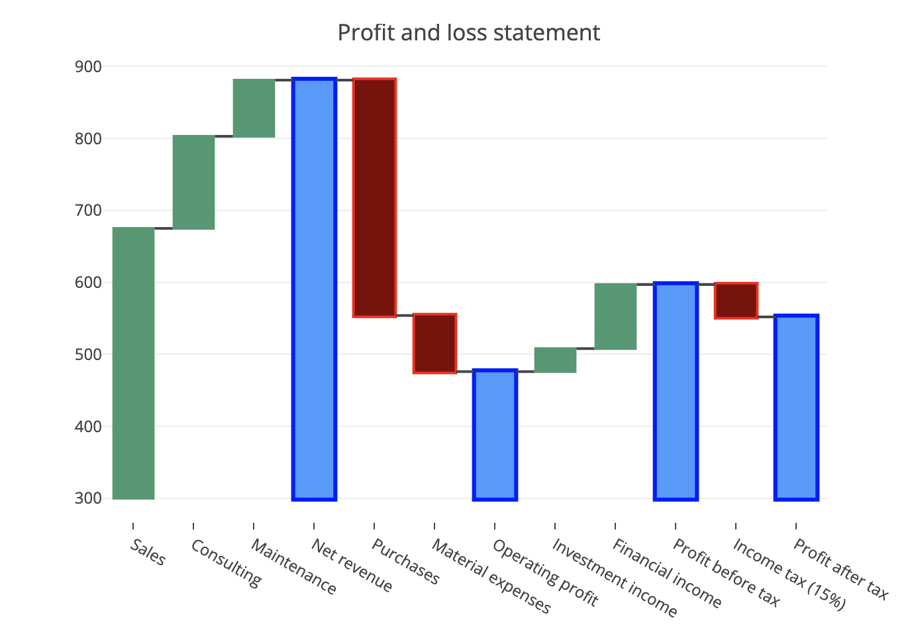
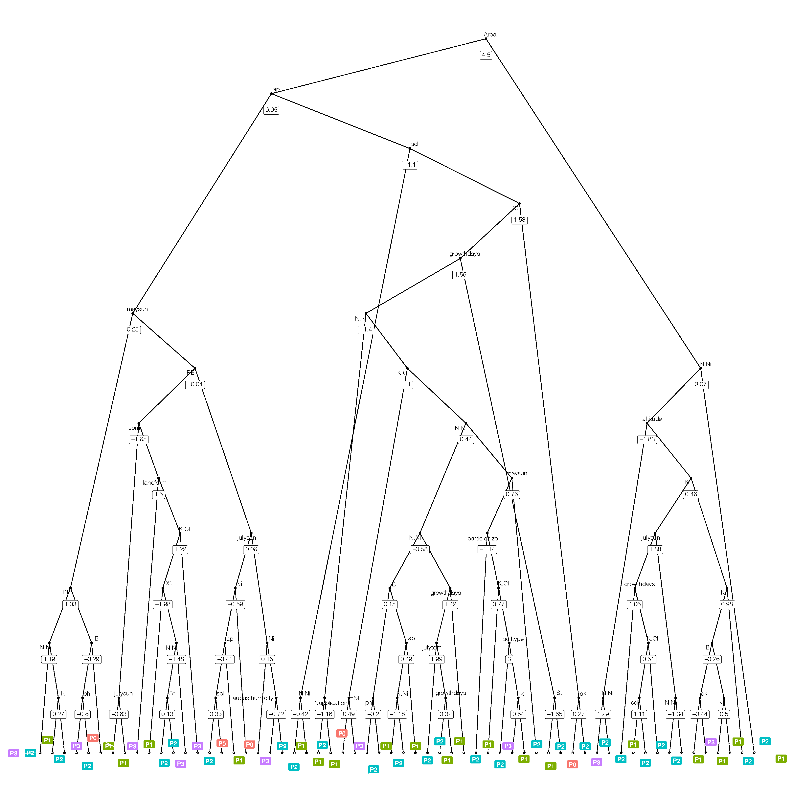

1.Why
1.1开源：相当于手机系统，可以使用任何在此平台上开发的软件，叫做包（package）

packages number
1.2 无所不能的分析及可视化工具，一些可视化例子，浏览以便于激发灵感

桑基图

冲积图

相关性
聚类图

曲线图

map

waterfall

使用R出图，AI加工图
1.3更大魅力在于对数据的自由探索
1.4丰富的功能：word、pdf、ppt、html、blog等
2.How
Q1:怎么学的更快？
带着需求来学习，学以致用
Q2:小白怎么入手？
安装、基础操作：教程，《R语言实战》相当于查询手册
Q3:遇到问题怎么办？
（1）先从教程（查询手册）中找答案，再去百度、谷歌（推荐），再交流、总结、分享
（2）真想学好还是建议翻墙，巨量优质的教程分享
3.我的数据可以用哪些方法分析？-多元统计
逃不出多元统计分析，去看学习强国的多元统计分析课程。
3.1变量
自变量：多元相关cor、主成分分析OCA、因子分析CA
自变量与因变量：多元回归、线性模型（广义glm、一般（方差分析）、普通、线性混合效应模型lme）、冗余分析RDA
线性混合效应模型
尤其适用于以下情况：
- 数据有缺失值；
- 不平衡设计，如一个处理3个样本，另一个5个样本；
- 结构化（nested）数据；
- 结果变量非连续，比如评分（5，10，15）；
- 等等。。
3.2样本
- 聚类分析
3.3样本与变量
样本与自变量：对应分析（CA）
样本、自变量与因变量：约束性对应分析（CCA）
5.预测模型
随机森林、神经网络、支持向量机等，大量数据的训练，caret包

随机森林预测
变量重要性排序
建模流程
6.Workflow